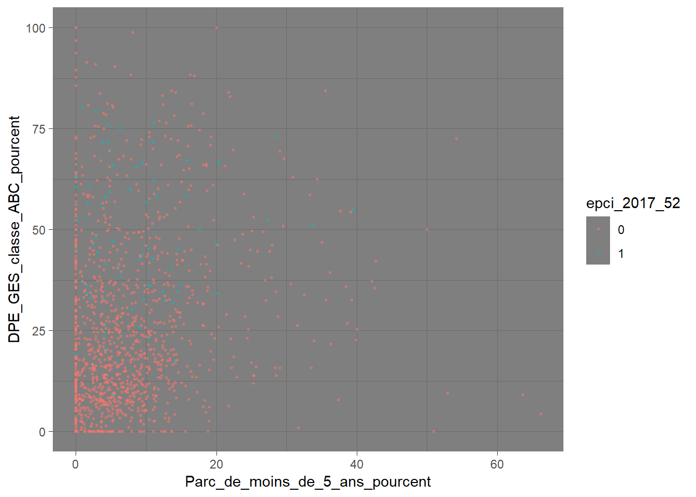
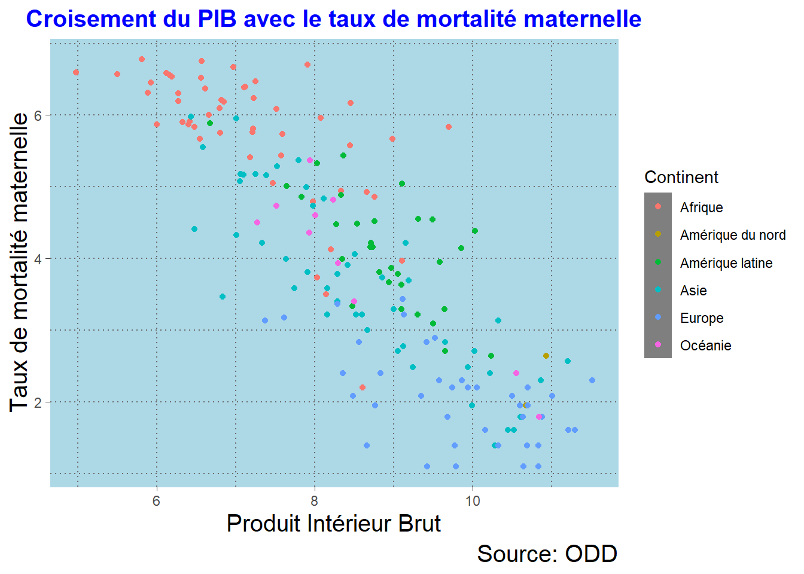
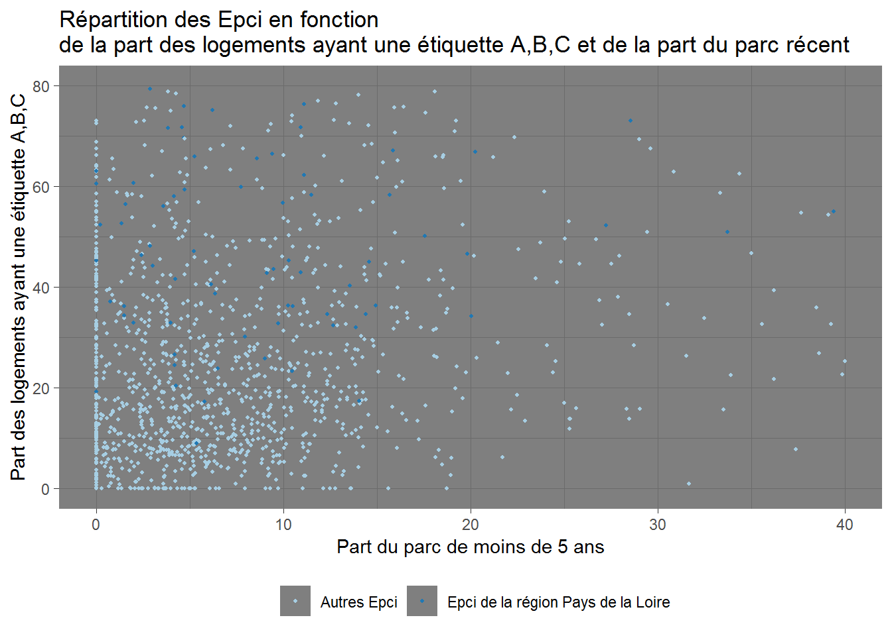
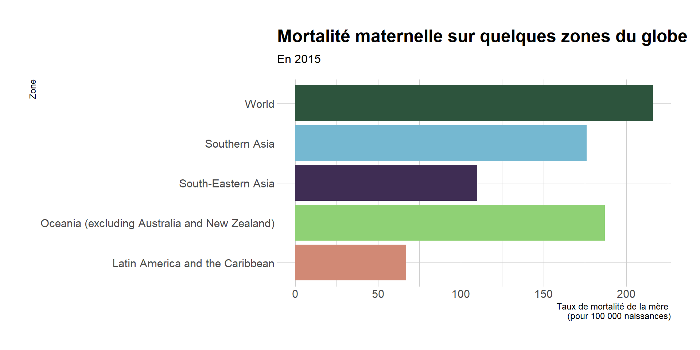
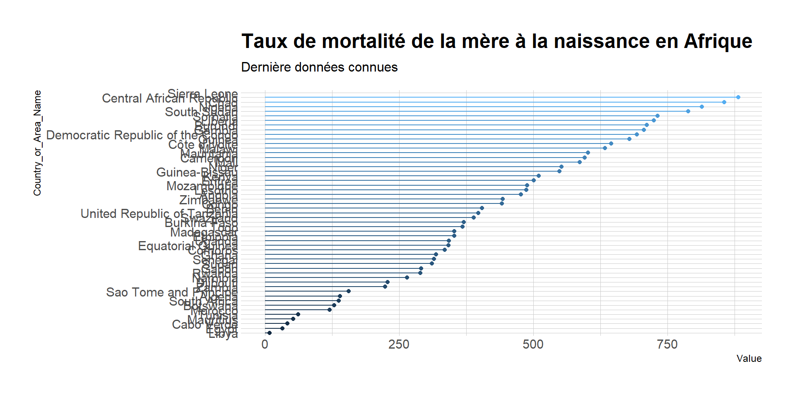
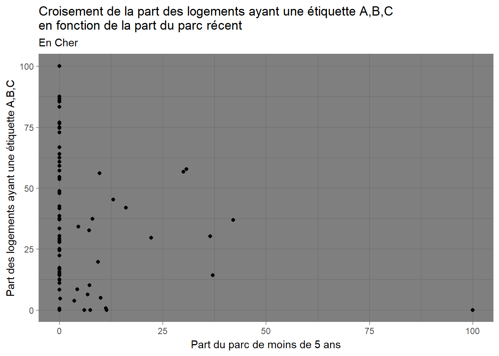

Chapitre 19 Exercices et corrections
19.1 Exercice 1
A partir des données de la table rpls_aggrege_large (dans le data_exercices_formation.RData), créer un nuage de point entre :
le % de parc social de moins de 5 ans;
et le pourcentage de logement avec un DPE ges de classe A,B ou C;
et une couleur différente pour distinguer les epci de la région PDL.
ggplot(data = rpls_aggrege_large %>%
filter(TypeZone=="Epci")) +
geom_point(aes(x=Parc_de_moins_de_5_ans_pourcent,
y=DPE_GES_classe_ABC_pourcent,
color=epci_2017_52),
alpha=.5,
size=.5
)
19.2 Exercice 2
Reprendre le nuage de point obtenu à partir des données ODD :taux de mortalité maternelle (Maternal_mortality_ratio) en fonction du produit intérieur brut (Gross_Domestic_Product_GDP) (Chapitre 4.1)
En modifier le thème:
- Insérer un titre de couleur, en gras, centré par rapport au graphe.
- Indiquer la source (ODD) et modifier sa taille
- Changer les titres des axes et leurs tailles.
- modifier la couleur de fond du graphe
- modifier le type de gadrillage (pointillés)
ggplot(graphique1) +
geom_point(aes(x=log(Gross_Domestic_Product_GDP),
y=log(Maternal_mortality_ratio),
color=Continent))+
labs(title="Croisement du PIB avec le taux de mortalité maternelle", y="Taux de mortalité maternelle", x="Produit Intérieur Brut", caption="Source: ODD")+
theme(plot.title=element_text(size=15,
face="bold",
color="blue",
hjust=0.5),
plot.caption=element_text(size=15),
axis.title.x=element_text(size=15),
axis.title.y=element_text(size=15),
panel.background = element_rect(fill = "lightblue",colour = "lightblue",size = 0.5),
panel.grid.major = element_line( size=0.5,linetype = "dotted"),
panel.grid.minor = element_line( size=0.5,linetype = "dotted"))
19.3 Exercice 3
En réutilisant le graphe obtenu à l’exercice 1, y rajouter:
une palette brewer pour la couleur;
la légende en bas;
des libellés (axes et légende) parlant et un titre.
ggplot(data = rpls_aggrege_large %>%
filter(TypeZone=="Epci")) +
geom_point(aes(x=Parc_de_moins_de_5_ans_pourcent,
y=DPE_GES_classe_ABC_pourcent,
color=epci_2017_52),
size=.7
)+
scale_color_brewer(type=qual,palette="Paired",
labels=c("Autres Epci","Epci de la région Pays de la Loire"))+
scale_x_continuous(limits = c(0,40))+
scale_y_continuous(limits = c(0,80))+
theme(legend.position = "bottom")+
labs(title="Répartition des Epci en fonction \nde la part des logements ayant une étiquette A,B,C et de la part du parc récent",
x="Part du parc de moins de 5 ans",
y="Part des logements ayant une étiquette A,B,C",
color="")
19.4 Exercice 4
Facette sur un diagramme barre avec :
- en variable discrète les régions
- en variables continues les indicateurs suivants :
- % de logements de 3 et 4 pièces
- % DPE énergie A,B,C
- % DPE GES A,B,C
- % de parc de moins de 5 ans
- une façon d’identifier la région Pays de la Loire
Pour avoir la liste des modalités dune variable :
Variables caractères ou factorielles :
unique(rpls_aggrege$Indicateur)Variables factorielles :
levels(rpls_aggrege$Indicateur)rpls_aggrege %>%
filter(TypeZone=="Régions",
Indicateur %in% c("3 et 4 pièces_pourcent",
"DPE GES classe ABC_pourcent",
"DPE énergie classe ABC_pourcent",
"Parc de moins de 5 ans_pourcent")) %>%
mutate(Indicateur=fct_recode(Indicateur,
`Logements de 3 et 4 pièces`="3 et 4 pièces_pourcent",
`Logements avec DPE énergie de classe A,B,C`="DPE énergie classe ABC_pourcent",
`Logements avec DPE GES de classe A,B,C`="DPE GES classe ABC_pourcent",
`Logements social de moins de 5 ans`="Parc de moins de 5 ans_pourcent"),
r52=ifelse(Reg_2017=="52",1,0)) %>%
ggplot()+
#On utilise l'indicatrice de la région Pays de la Loire pour mapper la transparence
geom_bar(aes(x=nReg_2017,weight=Valeur,fill=Indicateur,alpha=r52))+
coord_flip()+
theme_ipsum()+
scale_fill_ipsum()+
#On défini les valeurs maximum et minimum de transparence que l'on veut voir
scale_alpha_continuous(range=c(.65,1))+
facet_wrap(~Indicateur)+
theme(legend.position="none")+
labs(title="mon premier facet",y="En % du parc social",x="")
19.5 Exercice 5
Produire une carte du Loiret à l’EPCI du taux de logements collectifs dans le parc locatif social.
tt<-Carte_EPCI_France %>%
filter(CODE_DEPT=="45") %>%
left_join(rpls_aggrege) %>%
filter(Indicateur=="Logements collectifs_pourcent")
ggplot(data=tt)+
geom_sf(aes(fill=Valeur))+
labs(title="Taux de logements collectifs par EPCI",subtitle="Département du Loiret")+
theme(
axis.text.x = element_blank(),
axis.text.y = element_blank(),
axis.ticks = element_blank())
19.6 Exercice 6
Produire le nuage de point du croisement de la part des logements ayant une étiquette A,B,C en fonction de la part du parc récent. Créer une animation par département uniquement pour ceux de la région Centre-Val de Loire.
rpls<-rpls_aggrege_large %>%
filter(nReg_2017=="Centre-Val de Loire") %>%
mutate(nDep_2017=fct_drop(nDep_2017))
anim<-ggplot(data =rpls ) +
geom_point(aes(x=Parc_de_moins_de_5_ans_pourcent,
y=DPE_GES_classe_ABC_pourcent))+
labs(title="Croisement de la part des logements ayant une étiquette A,B,C \n en fonction de la part du parc récent",
subtitle="En {closest_state}",
x="Part du parc de moins de 5 ans",
y="Part des logements ayant une étiquette A,B,C",
color="")+
transition_states(states=nDep_2017,
transition_length = 1,
state_length = 2)
anim##
Frame 1 (1%)
Frame 2 (2%)
Frame 3 (3%)
Frame 4 (4%)
Frame 5 (5%)
Frame 6 (6%)
Frame 7 (7%)
Frame 8 (8%)
Frame 9 (9%)
Frame 10 (10%)
Frame 11 (11%)
Frame 12 (12%)
Frame 13 (13%)
Frame 14 (14%)
Frame 15 (15%)
Frame 16 (16%)
Frame 17 (17%)
Frame 18 (18%)
Frame 19 (19%)
Frame 20 (20%)
Frame 21 (21%)
Frame 22 (22%)
Frame 23 (23%)
Frame 24 (24%)
Frame 25 (25%)
Frame 26 (26%)
Frame 27 (27%)
Frame 28 (28%)
Frame 29 (29%)
Frame 30 (30%)
Frame 31 (31%)
Frame 32 (32%)
Frame 33 (33%)
Frame 34 (34%)
Frame 35 (35%)
Frame 36 (36%)
Frame 37 (37%)
Frame 38 (38%)
Frame 39 (39%)
Frame 40 (40%)
Frame 41 (41%)
Frame 42 (42%)
Frame 43 (43%)
Frame 44 (44%)
Frame 45 (45%)
Frame 46 (46%)
Frame 47 (47%)
Frame 48 (48%)
Frame 49 (49%)
Frame 50 (50%)
Frame 51 (51%)
Frame 52 (52%)
Frame 53 (53%)
Frame 54 (54%)
Frame 55 (55%)
Frame 56 (56%)
Frame 57 (57%)
Frame 58 (58%)
Frame 59 (59%)
Frame 60 (60%)
Frame 61 (61%)
Frame 62 (62%)
Frame 63 (63%)
Frame 64 (64%)
Frame 65 (65%)
Frame 66 (66%)
Frame 67 (67%)
Frame 68 (68%)
Frame 69 (69%)
Frame 70 (70%)
Frame 71 (71%)
Frame 72 (72%)
Frame 73 (73%)
Frame 74 (74%)
Frame 75 (75%)
Frame 76 (76%)
Frame 77 (77%)
Frame 78 (78%)
Frame 79 (79%)
Frame 80 (80%)
Frame 81 (81%)
Frame 82 (82%)
Frame 83 (83%)
Frame 84 (84%)
Frame 85 (85%)
Frame 86 (86%)
Frame 87 (87%)
Frame 88 (88%)
Frame 89 (89%)
Frame 90 (90%)
Frame 91 (91%)
Frame 92 (92%)
Frame 93 (93%)
Frame 94 (94%)
Frame 95 (95%)
Frame 96 (96%)
Frame 97 (97%)
Frame 98 (98%)
Frame 99 (99%)
Frame 100 (100%)
## Finalizing encoding... done!
19.7 Exercice 7
Reprendre le nuage de point obtenu à partir des données ODD :taux de mortalité maternelle (Maternal_mortality_ratio) en fonction du produit intérieur brut (Gross_Domestic_Product_GDP) (Chapitre 4.1)
Obtenir ce graphique pour le web avec des infos bulles regroupant le nom du continent, de la zone et les données associées
hchart(graphique1,"scatter",hcaes(x=Gross_Domestic_Product_GDP,
y=Maternal_mortality_ratio,
color=Continent)) %>%
hc_plotOptions(series=list(shadow='false')) %>%
hc_tooltip(
pointFormat = '<b>{point.Continent}</b><br/><b>{point.Parent_Zone_libelle}</b><br/>PIB de {point.x} un taux de mortalié maternelle de {point.y} (pour 100 000 naissances)'
)19.8 Exercice 8
Produire un tableau du nombre de logements collectifs et individuels (RPLS) par départements en région Centre-Val de Loire.
rpls_DEP_R24 <- rpls_aggrege_large %>%
filter(TypeZone %in% c("Départements","Régions"),nReg_2017=="Centre-Val de Loire") %>%
arrange(TypeZone,Zone) %>%
select(Zone,Logements_collectifs,Logements_individuels)%>%
setNames(c("Zone","Nombre de logements collectifs","Nombre de logements individuels")) %>%
kable("html",caption="Chiffres clés RPLS") %>%
kable_styling(bootstrap_options = c("striped", "hover")) %>%
row_spec(7, bold = T, color = "white", background = "grey")
rpls_DEP_R24| Zone | Nombre de logements collectifs | Nombre de logements individuels |
|---|---|---|
| Cher | 14434 | 7054 |
| Eure-et-Loir | 24462 | 7024 |
| Indre | 11533 | 6419 |
| Indre-et-Loire | 39030 | 9779 |
| Loir-et-Cher | 14632 | 6436 |
| Loiret | 37442 | 12671 |
| Centre-Val de Loire | 141533 | 49383 |